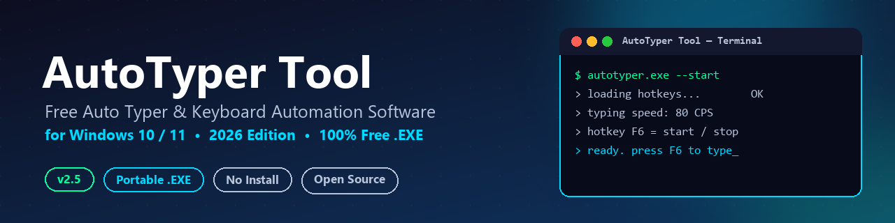
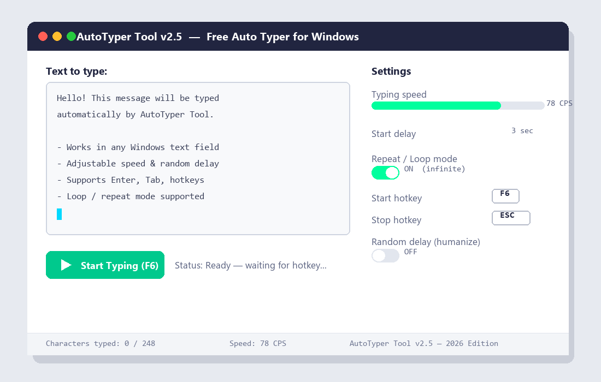

AutoTyper Tool — Free Auto Typer & Keyboard Automation Software for Windows
Automatically type text, scripts, chat messages, code & forms on Windows 10/11.
Custom hotkeys, adjustable speed, random “human-like” delay and loop mode —
in a portable, free, open-source .exe. 2026 Edition.

Key Features
Everything you need from a Windows auto typer — nothing you don't.
⚡ Adjustable Speed
Type from 1 to 500 characters per second, tuned to fit any application.
🎲 Humanize Mode
Add randomized delays between keystrokes for natural, human-like typing.
🔁 Loop / Repeat
Type your text once, a fixed number of times, or on an infinite loop.
🎯 Global Hotkeys
Start, pause, and stop from anywhere with F6 / F7 / Esc — fully remappable.
📂 Load From File
Type long scripts, articles, or source code straight from a .txt file.
🪶 Tiny & Portable
Under 5 MB, no installer, no admin rights, runs from a USB drive.
🆓 Free & Open Source
MIT licensed. No ads, no telemetry, no bundled software, ever.
🌍 Unicode Support
Correctly types accented characters and many non-Latin scripts.
How AutoTyper Tool Works
From download to your first automated text in under a minute.
- Download
AutoTyper.zipand extract it anywhere — it's fully portable. - Run
AutoTyper.exe. No installer, no setup wizard. - Type or paste the text you want typed automatically, or load it from a
.txtfile. - Set your typing speed, start delay, and (optionally) loop mode and humanize delay.
- Click into the target window, then press
F6to start. PressEscto stop anytime.
Screenshot
The AutoTyper Tool interface — text editor, speed controls, hotkeys and loop settings.

AutoTyper Tool vs. Other Auto Typers
| Feature | AutoTyper Tool | Typical Free Auto Typers | Paid Auto Typer Software |
|---|---|---|---|
| Price | Free forever | Free | $10 – $30 |
| Installation | Portable, no install | Varies | Installer required |
| Open Source | Yes | Rarely | No |
| Custom Hotkeys | Yes | Limited | Yes |
| Adjustable Speed (1–500 CPS) | Yes | Fixed presets | Yes |
| Random "Human-like" Delay | Yes | No | Sometimes |
| Loop / Repeat Mode | Yes | Limited | Yes |
| Ads / Bundled Software | None | Common | None |
| File Size | < 5 MB | Varies | 20 – 100 MB |
Download AutoTyper Tool for Windows
Free, portable, and open source — version 2.5, 2026 Edition.
Frequently Asked Questions
More questions are answered in the full FAQ on GitHub.
What is AutoTyper Tool?
AutoTyper Tool is a free, open-source Windows application that automatically types text for you. You write or load text, configure speed and hotkeys, and it simulates real keyboard input into any application.
Is AutoTyper Tool free to download?
Yes. AutoTyper Tool is completely free, open source under the MIT License, with no ads, no trial limits, and no premium tier.
Is AutoTyper Tool safe to use?
AutoTyper Tool contains no malware or telemetry and makes no network requests. Some antivirus tools flag keyboard-automation utilities as potentially unwanted programs due to the input-simulation APIs they use — a known false-positive category for this entire class of software.
Does AutoTyper Tool require installation?
No. AutoTyper Tool is a portable .exe — extract the ZIP and run it directly. No installer, no admin rights, and nothing is written to the Windows Registry.
What hotkeys does AutoTyper Tool use?
By default, F6 starts or resumes typing, F7 pauses, and Esc stops immediately. All hotkeys are fully customizable in Settings.
Can AutoTyper Tool type into games, browsers, and chat apps?
Yes. AutoTyper Tool simulates keystrokes at the operating system level, so it works in browsers, Office apps, Discord, Slack, terminals, code editors, and most games and forms.